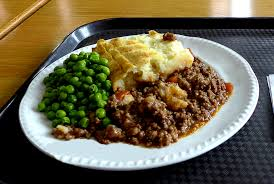

Shepherd's Pie Recipe

Description
It's a nice baked and savory dish mixed with meat, mashed potatoes and corn. This meal originally came from the United Kingdom. It's a great meal that you can really make your own. You can add more veggies or switch up the meats. Whatever your preferences, this meal will still taste good!
Ingredients
- Mashed Potatoes
- Beef
- Onions
- Corn
- Paprika
- Salt
- Pepper
- Garlic
- Butter
Steps
- Preheat oven to 350 Fahrenheit.
- First, Your going to pre-chop your garlic and onions.
- After, grab your potatoes and peel and chop them up
- Next, Grab your skillet sandpit it on the oven to about a medium burn. You are going to put in your garlic and onions and saute them with some butter or olive oil
- After, You will add in your meat of choice and add in some salt and pepper and whatever type of other flavoring you would like.
- Then, stir the onions, meat and seasonings in and make sure everything comes together and the meat is browned..
- Then at this point, you can add in your corn and whatever vegetables you would like. And let it simmer a bit.
- At this point you can boil your potatoes until they are soft. Once they are soft you can drain the potatoes.
- At this point, you should add butter, salt, pepper and your other seasonings to the potatoes and start mashing until they are smooth.
- Then you will take your casserole dish and put in the meat and corn mixture, and top it with your mashes potatoes.
- You are going to bake this casserole for maybe 20-30 minutes. At least until the casserole is a little golden browned.